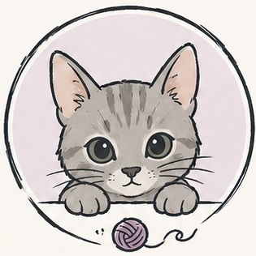

eskiu
a self-hosting systems language
Eskiu is a statically typed, compiled systems language with the power of C
(explicit memory, direct C interop, native output via LLVM) and the immediacy of a
scripting language: eskiuc run file.esk compiles and executes in one
step. It already runs in shipping software, from AR/VR rendering to a Nintendo 3DS,
and builds the same on Linux, macOS, and Windows. Self-hosting since v0.3.0.

1.In production
Eskiu already runs in shipping software. It replaces memory-sensitive native code with no garbage collector, keeps a C ABI so it drops straight into an existing C or C++ codebase, and reaches hardware a young systems language rarely meets. The same source builds on Linux, macOS, and Windows, including the async networking stack.
| Project | Result | Detail | |
|---|---|---|---|
| ReactVision | ≈85% less memory | AR/VR rendering modules migrated from C++, preserving C ABI interop. | case study |
| Nintendo 3DS | on-device AR demo | Camera-and-gyroscope AR rendered through ViroCore on citro3d, its logic in Eskiu on the ARM11. | case study |
Early adopters: ReactVision, The Morrow Digital.
2.The language
Eskiu compiles through LLVM to a standalone native binary, with no garbage collector
or managed runtime. The surface syntax is C-style, so the basics are familiar; the
semantics add sum types, generics with bounds, operator overloading,
async/await, channels, and atomics. The compiler is written in Eskiu.
Sum types and exhaustive match
An enum carries data per variant, and match is checked for
exhaustiveness at compile time, so a forgotten case fails to compile.
parse_port.esk
enum ParseResult { Port(int), InvalidRange(int), NotANumber, } ParseResult parse_port(string s) { let n: int = atoi(s); if (n == 0) { return NotANumber; } if (n < 1 || n > 65535) { return InvalidRange(n); } return Port(n); } match parse_port("8080") { Port(p) -> printf("listening on :%d\n", p); InvalidRange(n) -> printf("%d out of range\n", n); NotANumber -> printf("not a number\n"); }
Generics and operators
Types are parameterised with interface bounds and monomorphised at compile time. A type can also overload operators as ordinary methods, resolved by operand type, so vector math reads like arithmetic and lowers to a direct call with no runtime cost.
vec.esk
struct V3 { float x; float y; float z; } V3 operator +(V3 a, V3 b) { let r: V3; r.x = a.x + b.x; r.y = a.y + b.y; r.z = a.z + b.z; return r; } V3 operator *(V3 v, float s) { let r: V3; r.x = v.x * s; r.y = v.y * s; r.z = v.z * s; return r; } let mid: V3 = (a + b) * 0.5; // + and * resolve to the overloads
Async and channels
async functions return a Future; await suspends
until a value is ready. Typed channels (Chan<T>) move values between
tasks. The reactor runs on kqueue, epoll, or WSAPoll, so the same code drives Linux,
macOS, and Windows.
sum_squares.esk
import <future>; import <channel>; async int sum_squares(Chan<int>* ch) { let a: int = await chan_recv(ch); let b: int = await chan_recv(ch); let c: int = await chan_recv(ch); return a + b + c; } Chan<int>* ch = chan_new<int>(8); for (i in 1..4) { chan_send(ch, i * i); } // 1, 4, 9 -> 14
3.Toolchain
One binary, eskiuc, drives everything. eskiuc run compiles
and executes in a step; eskiuc build emits a native binary. The stdlib
is bundled, so imports resolve out of the box.
$ eskiuc run app.esk # compile + run in one step $ eskiuc build app.esk -o app # emit a standalone native binary $ eskiuc --version
Try it
Edit the program below and run it. The server compiles it with LLVM and runs it through the same eskiuc run.
Output appears here. Press Run (or ⌘/Ctrl + Enter).
sandboxed: no network, time- and memory-limited, output capped.
4.Install
On macOS or Linux, install the latest release with one command:
$ curl -fsSL https://eskiu-lang.org/install.sh | sh
It downloads the prebuilt binary for your platform, verifies its checksum, and installs it. Or grab a binary directly and untar it into /usr/local:
Windows is validated end to end on a native CI runner: the compiler builds and links, and exceptions plus the blocking and async networking stacks all pass. It is not yet part of the release gate, so the Windows build tracks a little ahead of the Linux and macOS ones.
# or build from source $ git clone https://github.com/doranteseduardo/eskiu $ cd eskiu && make